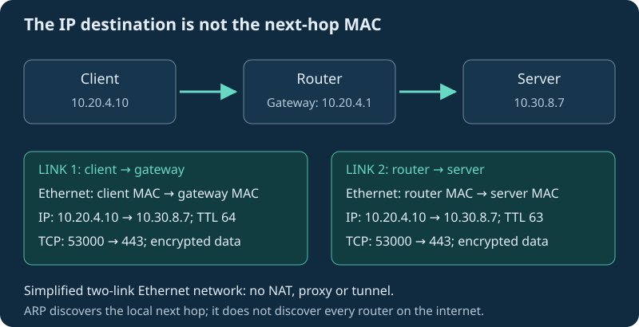

Follow the packet
A listener taps Play. "The network is slow" is not a diagnosis. Draw the path and identify the first boundary that stops behaving as expected.
By the end you can...
Separate links, routes, connections and application requests, and assign an owner to each hop.A useful layer model
| Layer | Question | Example |
|---|---|---|
| L2: local link | How do I reach the next device on this link? | Ethernet, MAC addresses, ARP; IPv6 uses Neighbor Discovery. |
| L3: network | Which next hop reaches this destination IP? | IP, routes, gateways. |
| L4: transport | Which process and conversation? | TCP/UDP ports and connection state. |
| L7: application | What operation is requested? | HTTP method, hostname, path and status. |
A switch forwards frames within a link; a router forwards packets between networks. A host uses its route table to choose a next hop, resolving that hop's link address where needed. Cloud virtual networks abstract much of the physical fabric, not the need for correct routes and policy.
There is more than one path

At the whiteboard
“Which address is for the final destination, and which is only for the next hop?” Answer that at every router. A switch learns source MAC locations and forwards by destination MAC; a router selects a next hop by destination IP.
Name lookup: device -> recursive DNS resolver -> DNS answer
API request: device -> edge proxy -> regional LB -> API VM -> data service
Media fetch: device -> CDN cache -> origin (only on a cache miss)The resolver usually does not carry the API traffic. An HTTP reverse proxy accepts a client connection and opens a separate backend connection. Routing, filtering, TLS and timeouts must work on both legs. A return route is just as important as a forward route.
Control plane versus data plane
A cloud API updates a listener or route: control plane. An established connection carrying audio bytes: data plane. A successful configuration update does not prove that the data path works.Map the responsibility
In AWS, a VPC, subnet route table and security group shape the path to EC2. In Azure, a VNet, effective routes and NSG shape the path to a VM. On your own VMs, inspect the host route table, host firewall and upstream router. A managed load balancer does not own your application's readiness or capacity.
Do it by hand
DNS succeeds. The edge returns an HTTP 502. Which boundaries have you proved, and what should you inspect next?
Show answer
You obtained a DNS answer and reached an HTTP-speaking component that returned 502. That does not prove the edge reached a healthy origin. Identify who generated the status, then inspect its backend connection, TLS handshake, target health and upstream logs. Do not start by changing DNS.
Next: put addresses and routes on this drawing. Primary reading: RFC 1122: Internet host communication layers.
Link-layer reading: ARP and IPv6 Neighbor Discovery.